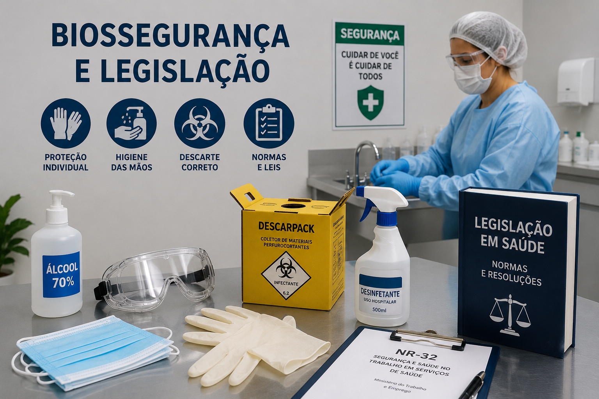
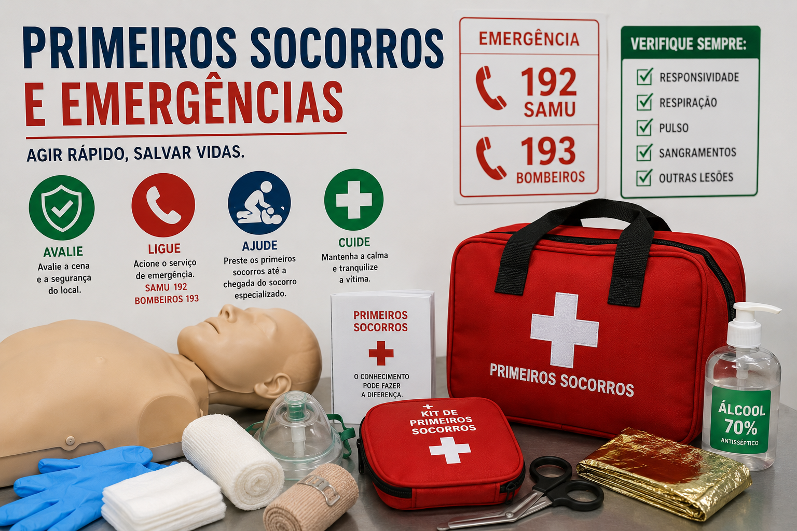

Revisão Acadêmica
Tudo o que você precisa para revisar antes da prova. Aqui você encontra resumos simples, flashcards para memorizar mais rápido e um simulado para testar seus conhecimentos.
Começar EstudoAprenda como evitar acidentes, prevenir infecções e trabalhar com segurança durante os atendimentos.

No ambiente de saúde existem vários tipos de riscos que podem afetar profissionais e pacientes.
Riscos físicos: ruído, calor, frio, radiação e vibrações.
Riscos químicos: medicamentos, produtos de limpeza e outras substâncias químicas.
Riscos biológicos: vírus, bactérias, fungos e outros microrganismos.
Riscos ergonômicos: postura inadequada, movimentos repetitivos e excesso de esforço físico.
Riscos de acidentes: quedas, choques elétricos, cortes e perfurações.
Lavar ou higienizar as mãos continua sendo a forma mais simples e eficiente de evitar infecções.
Os 5 momentos mais importantes são:
Se cair na prova perguntando qual é a medida mais eficaz contra infecções hospitalares, a resposta geralmente é: higienização das mãos.
| Padrão | Vale para todos os pacientes. Inclui lavar as mãos e usar EPIs quando necessário. |
| Contato | Usada quando o microrganismo é transmitido pelo toque. Exige luvas e avental. |
| Gotículas | Indicada para doenças como gripe. Utiliza máscara cirúrgica. |
| Aerossóis | Utilizada em doenças como tuberculose. É necessário usar máscara N95 porque as partículas ficam suspensas no ar por mais tempo. |
O PGRSS organiza o descarte correto dos resíduos produzidos nos serviços de saúde.
Uma das etapas mais importantes é separar o lixo corretamente no momento em que ele é gerado.
Questão clássica de prova: agulhas pertencem ao Grupo E.
Quem trabalha na área da saúde passa muito tempo em pé, movimenta pacientes e realiza esforço físico constantemente.
Por isso, a ergonomia ajuda a evitar dores e lesões, principalmente na coluna.
Ao transferir um paciente, o ideal é usar a força das pernas e evitar sobrecarregar as costas.
Negligência: quando o profissional deixa de fazer algo que deveria fazer.
Imprudência: quando age sem cuidado ou de forma precipitada.
Imperícia: quando realiza um procedimento sem possuir conhecimento técnico suficiente.
A Lei de Biossegurança regula o uso de organismos geneticamente modificados e pesquisas com células-tronco.
A Lei Arouca estabelece regras para pesquisas com animais e segue o princípio dos 3Rs: Substituir, Reduzir e Refinar.
Atuação clínica imediata, suporte básico à vida e bases fisiopatológicas.

O protocolo XABCDE ajuda a identificar rapidamente o que pode matar a vítima primeiro.
X: controlar sangramentos graves.
A: verificar se as vias aéreas estão livres e proteger a coluna cervical.
B: observar se a vítima está respirando adequadamente.
C: avaliar circulação, pulso e possíveis sinais de choque.
D: verificar o nível de consciência e as pupilas.
E: procurar lesões escondidas sem deixar a vítima perder calor.
Lembre-se: o X foi adicionado antes do ABCDE porque hemorragias graves podem matar em poucos minutos.
Atualmente a sequência da RCP é CAB.
Primeiro fazemos as compressões, depois cuidamos das vias aéreas e da respiração.
As compressões devem ocorrer entre 100 e 120 vezes por minuto e atingir profundidade de aproximadamente 5 a 6 cm em adultos.
Se a pessoa estiver engasgada e não conseguir falar ou tossir, realize golpes nas costas e a Manobra de Heimlich.
Infarto: dor forte no peito que pode se espalhar para braço, pescoço ou mandíbula. Mantenha a pessoa calma e procure atendimento urgente.
Hipoglicemia: queda do açúcar no sangue. Se a pessoa estiver consciente, ofereça algo doce.
Crise hipertensiva: pressão muito elevada que pode colocar a vida em risco.
Desmaio: deite a pessoa e eleve as pernas.
Convulsão: afaste objetos perigosos, proteja a cabeça e nunca coloque nada dentro da boca.
Durante uma crise de asma, a respiração fica mais difícil e o paciente pode começar a respirar muito rápido para tentar compensar a falta de ar.
Cheyne-Stokes: a respiração vai ficando mais forte, depois mais fraca e pode parar por alguns segundos.
Kussmaul: respiração muito profunda e acelerada, comum em casos de acidose metabólica.
Biot: respiração totalmente irregular e imprevisível.
O gelo ajuda a reduzir dor e inchaço, mas o resfriamento dos músculos acontece de forma lenta.
No protocolo P.R.I.C.E. lembre-se: Proteção, Repouso, Gelo, Compressão e Elevação.
Toque nos cards abaixo para revelar a resposta e testar sua memória imediata.
Qual a conduta imediata em caso de acidente pérfuro-cortante usado?
Lavar abundantemente com água e sabão, notificar imediatamente o acidente de trabalho e buscar atendimento médico para início imediato do Protocolo PEP (Profilaxia Pós-Exposição).
Qual o significado do princípio dos 3Rs na Lei Arouca (CONCEA)?
Substituir (métodos alternativos), Reduzir (menor número de animais) e Refinar (minimizar dor/estresse por analgesia).
O que define o padrão ventilatório de Kussmaul?
Respirações profundas, ruidosas e hiperventiladas causadas por Acidose, comum na descompensação da Cetoacidose Diabética.
Questões elaboradas nos moldes de avaliações universitárias de Fisioterapia.